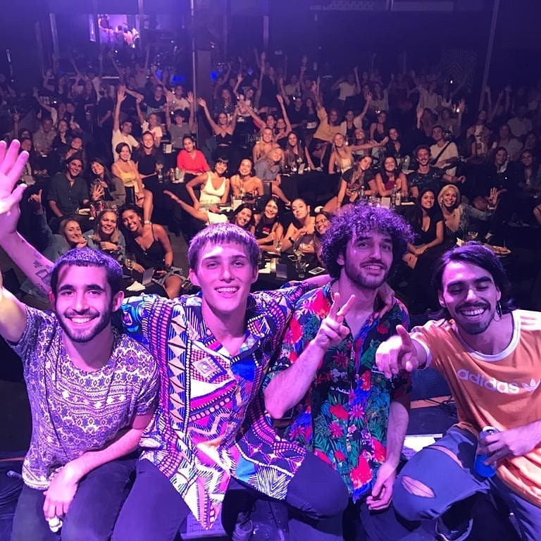
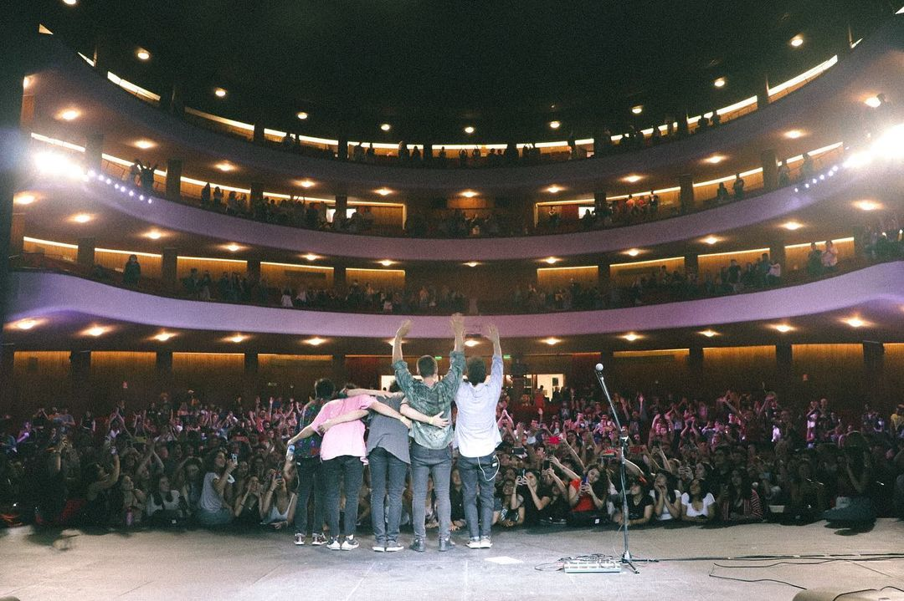
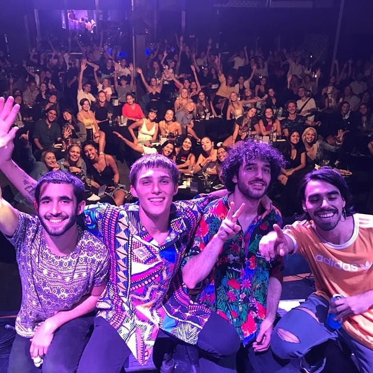
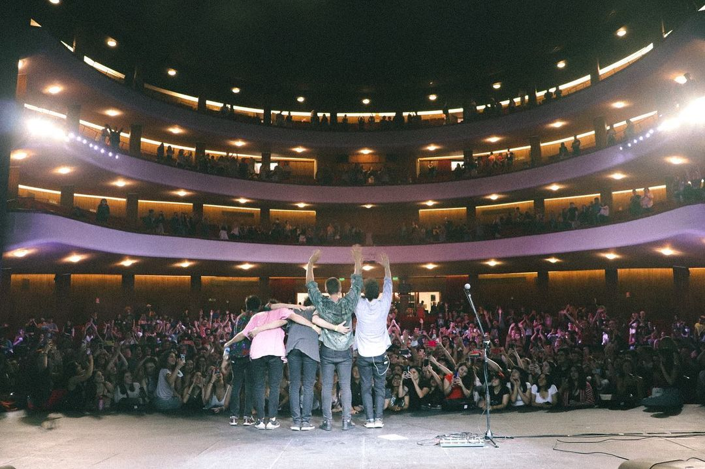

31 de Octubre 2019: Morrison, Villa Mercedes: “Tocamos un poco de canciones nuestras y algunos covers. También traemos cosas que no hemos subido y están inéditas. Fue un formato más íntimo que lo que solemos hacer cuando vamos con la banda”. Y agregó que si bien fue en una modalidad acústica, él con una guitarra eléctrica y Tomás con su voz, no perderán su aura rockera y alegre.Koino Yokán. Empezaron a girar por CABA y el interior del país (Córdoba Capital, La Plata, Junín, San Miguel de Tucumán, Gral. Pico, Tandil, Colon, Esquina Corrientes, Mercedes, City Bell, etc). . Está buenísimo el trabajo en estudio y todo lo que podemos hacer dentro de una casa, pero tocar en vivo es súper diferente porque, además de hacer la música en la compu y estar ahí grabando, hay algo mucho más humano que es tocar para gente que está directamente escuchándola. Así que está buenísimo
 



En noviembre del año pasado tuvieron la oportunidad de colmar los asientos del teatro “sala cultural Aleph“ en la ciudad de Córdoba y de la misma forma culminaron su año artístico el mes siguiente en el teatro “Lucille“ en CABA, agotando las localidades. Koino Yokán. Empezaron a girar por CABA y el interior del país (Córdoba Capital, La Plata, Junín, San Miguel de Tucumán, Gral. Pico, Tandil, Colon, Esquina Corrientes, Mercedes, City Bell, etc) . Está buenísimo el trabajo en estudio y todo lo que podemos hacer dentro de una casa, pero tocar en vivo es súper diferente porque, además de hacer la música en la compu y estar ahí grabando, hay algo mucho más humano que es tocar para gente que está directamente escuchándola. Así que está buenísimo. Les diría que se van a encontrar con un espectáculo distinto. Es muy diferente, bastante rockero, variado, con más temas nuestros pero, sin dejar de lado a los covers. Así que, que vengan con buenas expectativas porque va a ser divertido.